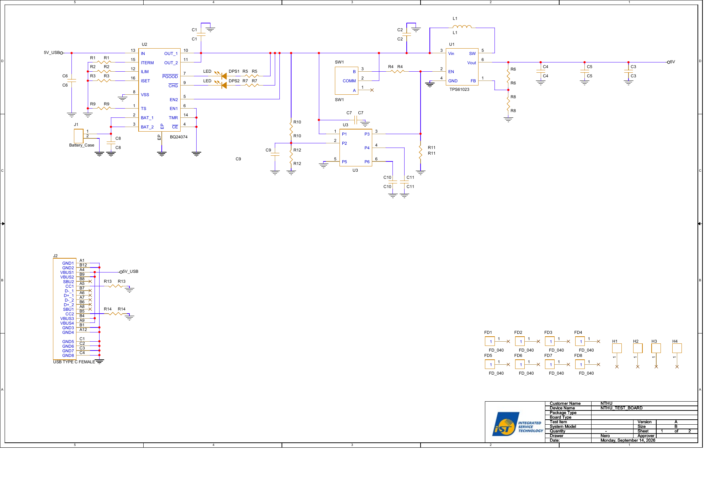

Engineering report · current documented design
AeroSense translates a weak cellular fluorescence signal into an electrical measurement. This report follows the reader from the four-well optical geometry through gas flow, photon collection, PCB design and digital signal processing. Each quantitative result is identified by its calculation or simulation method.
Follow the signal from sample to number
Four transparent wells register to four blue LEDs in the board geometry; they share an upper gas space and a single photodiode. Proposed OR/Orco–GCaMP cells would turn a receptor-associated calcium change into green fluorescence. An optical filter, transimpedance amplifier (TIA), 16-bit ADC and ESP32 would carry that signal toward a four-frequency decoder. Frequency channels identify LED excitations; they are not automatically independent biological wells. A measured mixing matrix is required before claiming well separation.
The optical readerLook inside AeroSense.
Assembled
Where does the detector actually collect light?
We adapted the spatial measurement logic of Burton et al. [1]Burton et al., 2020 — optical photometry system and spatial measurement definitions., not their device geometry or performance. Our model separates excitation fluence Φ, collection fraction η(r), and their spatial correspondence J = Φem(r)η(r). η is received power divided by power emitted from an isotropic point source. The volume integral of J alone is not detector power: emission density and the emitting cell layer must also be included.

For one stated scenario, the simulated received green power was 0.657 ± 0.058 nW (mean ± Monte Carlo SE). The model assumes 470/520 nm wavelengths, a 500 µW LED, 20 µm emitting cell layer, quantum yield 1, specified resin/liquid optical coefficients and a proxy absorbing filter. It omits measured resin autofluorescence, GCaMP expression and calcium state, real LED angular output, filter-angle behavior and electronic noise. This number cannot be presented as measured power, SNR or detection limit.

Use parameter sweeps to expose fragile assumptions
The optical sweep contains 24 conditions × 3 seeds, with 16,000 excitation and 40,000 emission packets per seed (4,032,000 packets total). It varies detector position, resin absorption/scattering, liquid scattering, wall reflection, filter proxy, 75/150/200 µL fill, emitting-layer offset and LED choice. The baseline was 0.678 ± 0.092 nW; a centered detector proxy was 0.898 ± 0.049 nW; reversing the assumed detector offset gave 1.068 ± 0.069 nW. These conditional comparisons do not establish the actual board orientation. Differences near the MC uncertainty should not be ranked as engineering wins.

A scale calculation illustrates the electronics challenge: if a 520 nm photodiode responsivity of 0.3 A/W applies, 0.678 nW gives about 0.203 nA and 20.3 mV across an ideal 100 MΩ transimpedance. At 2.5 V reference, a 16-bit ADC step is about 38.15 µV. Unknown cellular brightness, background, leakage and amplifier noise can dominate; this calculation is not evidence of adequate SNR. Flat 0.5 mm well floors and 150 µL nominal fill do not guarantee uniform illumination.
The perforated plate did not reduce the chosen headspace-speed metric
We solved 27 perforated-plate combinations—hole diameter 1.6/2.0/2.4 mm × hole count 4/6/12 × inlet standoff 1.5/3/4.5 mm—plus a no-plate control on a common 0.4 mm grid. All 28 reached the declared iteration criteria; maximum terminal mass imbalance was 0.117%. At the stated 1 mL/min scaling, the lowest plate-case mean four-well headspace speed was 0.001316 mm/s, compared with 0.00080951 mm/s without a plate. Every plate case was higher under this metric. We therefore cannot claim the divider protects cells by slowing flow.

These videos compress 60 seconds of modeled advection into ten seconds. They do not model diffusion, dissolution, evaporation, liquid flow, cell shear or biological growth. The 0.4→0.3→0.2 mm baseline refinement was nonmonotonic in pressure, so mesh independence is not established. Filter/tubing losses and physical leaks are still unmeasured.
Eight operating meshes, one mutually exclusive service option
The operating print uses a rigid black resin body, hinged lid and common cap; a gray service tray; and four individually oriented clear test wells. Clear resin is designated for cell-free fit and optical trials, not qualified direct HEK293T culture. Print coordinates are translated to positive space; use the assembly coordinates and manual for placement, rather than overlapping STL origins.

| Part | Material / role | File |
|---|---|---|
| 01 Integrated body | Rigid black · enclosure | STL |
| 02 Service tray | Gray · electronics access | STL |
| 03 Hinged lid | Rigid black · closure | STL |
| 04 Gas-optical cap | Rigid black · shared headspace | STL |
| 05 NE well | Clear test resin · cell-free only | STL |
| 05 NW well | Clear test resin · cell-free only | STL |
| 05 SW well | Clear test resin · cell-free only | STL |
| 05 SE well | Clear test resin · cell-free only | STL |
An optional two-piece accessible cap replaces the one-piece cap, making nine operating prints, rather than adding to the eight-piece assembly. Lower STL · Upper STL · editable source. Its seal, cleaning and usability have not been tested.
Four frequency-tagged excitations, one high-impedance receiver
The reader's power path uses a TPS61023 boost converter [2] and BQ24074 battery charger [3]. The ESP32-WROOM-32E coordinates excitation and data acquisition [4]. The map below locates each selected component on the supplied board layout; the inspector connects its function to the corresponding schematic block.
The analog chain uses an LP5907 low-noise LDO [5] and LTC6655 2.5 V reference [6]. An LMP7721 transimpedance amplifier converts photodiode current to voltage [7], before an ADS8866 16-bit SAR ADC digitizes the signal [8]. Four Würth 155124BS73200 blue LEDs supply excitation [9]; the VEMD5060X01 silicon PIN photodiode receives collected light [10].
Firmware assigns LED gates to GPIO 25/26/27/32 and ADC CONVST/SCLK/DOUT to 33/18/19. Its proposed 4 kHz sample timebase yields 8,000 samples in a two-second I/Q block. Candidate excitation frequencies are 41/67/89/113 Hz. All assignments and waveform timing must be checked on hardware before operation.


In 48 synthetic lock-in test cases varying 0.5/1/2/4 s windows, 0.1/1/10 mV noise and 0/1/10/50 µs timing perturbation, the maximum offline joint least-squares relative amplitude error was 5.82%. Simulated 25%-duty DDS cross-frequency leakage reached 0.71%. Neither is a board-accuracy figure. A simplified 100 MΩ × 2.2 pF feedback pole is about 723 Hz, but amplifier stability, ADC drive, leakage and Wi-Fi interference require measurement.

Publish the priced subset and the missing cells
The English workbook separates printed pieces, purchases and board entries. Budget assumptions give NT$713.99 allocated resin for eight prints, NT$269.70–452.70 for core hardware/fan, and NT$140–390 for the priced gas/optical subset. Filters, coupling items, shared equipment, labor, tax and shipping are incomplete or unquoted. The supplied NT$131,250 quote covers two boards including design/setup; NT$65,625 as an allocated average is not a production unit price. The documented partial total is NT$66,748.69–67,181.69; a complete device cost cannot yet be calculated.
A task-based user-feedback form exists for locating parts, assembly, well replacement, UI operation, demo recognition, errors and perceived clarity. No completed participant responses or satisfaction result are present in this package. The form does not justify a SUS score or a usability claim. Read the English questionnaire and analysis plan.
What the next reader must prove
Print and inspect; verify board/connector fit, seals, filtered inlet/exhaust, flow and pressure with cell-free liquid. Compare divider with no-plate control and repeat assembly cycles.
Measure resin transmission and autofluorescence, filter leakage, dark noise, linearity, LED power/waveforms, ADC gain, timing, frequency crosstalk and well mixing matrix on a real board.
Qualify culture-contact materials and controlled cell conditions, then measure replicated OR/Orco–GCaMP responses before food-headspace work. Run consented task-based assembly/usability sessions and keep negative findings.
This is a reproducible design and simulation package with compiled software and a demo UI. It does not yet establish a working PCB, cell-safe cartridge, detection limit, odor classification, field deployment or a food-safety verdict. See Safety & Security.